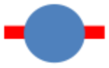
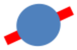
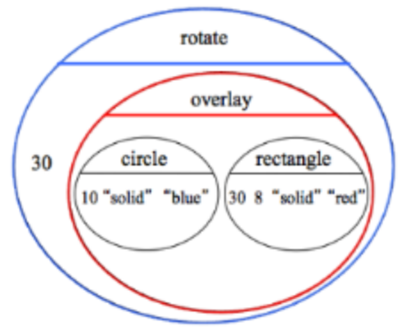
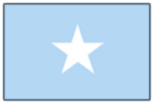
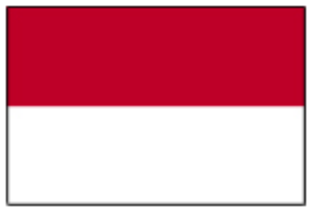
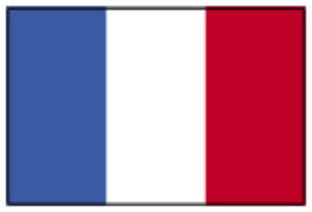
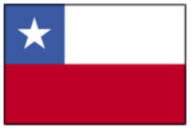
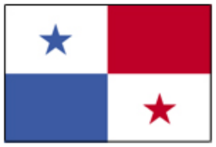

NOTA: ESTAS LECCIONES NO ESTAN DESTINADAS A SER ENSEÑADAS EN SECUENCIA - aqui se recogen únicamente por conveniencia!
Los estudiantes profundizarán su comprensión de varios conceptos, ya sea a través de la práctica continua y revisión,
Encontrando material más complicado (estructuras).
Los estándares con el prefijo BS son específicos de Bootstrap; Otros son del Common Core. Pase el mouse sobre cada estándar para ver sus correspondientes declaraciones de evidencia. Nuestra Documento de estándares Muestra qué unidades cubren cada estándar.
A-SSE.1-2: The student interprets the structure of expressions to solve problems in context
F-IF.1-3: The student uses function notation to describe, evaluate, and interpret functions in terms of domain and range
F-IF.4-6: The student interprets the behavior of functions that arise in applications in terms of the context
F-IF.7-9: The student uses different representations of a function to make generalizations about key features of function behavior and to compare functions to one another
F-LE.5: The student interprets expressions for functions in terms of the situations they model
MP.1: Make sense of problems and persevere in solving them
MP.7: Look for and make use of structure
Duración: 80 Minutos
Glosario:
dominio: el tipo de datos que espera una función
estructura de datos: Un grupo de valores que se pueden devolver como un único tipo de datos
rango: el tipo de datos que produce una función
Materiales:
Preparación:
Tipos
Funciones
Values
Manimpulando Imagenes
Repaso
Se presentan operaciones adicionales de imágenes (images). A medida que los estudiantes usan estas operaciones para crear imágenes más interesantes, pueden practicar la composición de funciones, unir contratos y escribir expresiones anidadas.
Objetivos de aprendizaje
Aprender a utilizar operaciones avanzadas de imagen (image)
Practicar funciones de composición
Practicar usando contracts para ayudar con la composición de operaciones
Practicar escribiendo y evaluando expresiones anidadas
Aprender como importar un gif, png, y otras imagenes desde archivos
Resultados del Producto
Los estudiantes crean imágenes escaladas, giradas, invertidas y en capas
Materiales
Entorno de edición (WeScheme o DrRacket con el bootstrap-teachpack instalado)
Preparación
Computadora para cada estudiante (o pareja), corriendo WeScheme o DrRacket (Si usa DrRacket, asegurese que el archivo Images.rkt esta cargado)
Los libros de trabajo del estudiante y algo con que escribir
Manimpulando Imagenes(Tiempo 20 minutos)
Manimpulando ImagenesAnteriormente, aprendimos a crear imágenes simples utilizando operadores como circle, rectangle y triangle. Podemos combinar o manipular estas formas básicas para hacer más interesantes, de la misma manera que podemos combinar y manipular números. En esta lección, aprenderermos a usar las funciones de Racket para manipular y combinar imágenes.
Use of the board is critical in this activity - you’ll want to have lots of room to write, and lots of visuals for students to see. Have students review some of the Image-producing functions they already know (triangle, circle, etc.). Quiz them on the contracts for these functions.
Imagina que queremos crear la imagen de un simple satelite que se parezca al que se muestra aca. Esta imagen contiene un círculo azul y un rectángulo rojo, con el círculo en la parte superior del rectángulo. Racket tiene una función llamada overlay, que permite poner una imagen encima de otra. Aquí esta un contrato y una declaración de propósito que explica lo que hace:
Start out by reminding students why contracts matter: they specify types instead of values, which makes them really flexible! You can demonstrate this by showing them the code for a simple image, and then replacing the size of the triangle with a sub-expression:
This sets students up to see overlay as a logical extension - instead of image-producing Circles of Evaluation with number-producing subexpressions, there can be image-producing Circles with image-producing subexpressions.
Usando overlay, podríamos hacer una imagen de un satélite. Echa un vistazo al código de abajo, luego pulsa "enter" y ver qué forma hace! ¿Puedes cambiar el color del círculo o el tamaño del rectángulo? ¿Puedes usar overlay para colocar una estrella encima de la estrella y el rectángulo?
See an example.
Before students type in the code and try it out, ask the class what they think will happen - what will the size be? The color? The text?
Este satélite está volando en el cielo. ¿Qué pasaría si sopla un viento fuerte, haciendo que el satélite volara ligeramente sobre su costado, como la imagen que se ve aquí? Entonces, usaremos la función rotate de Racket:
Trata de copiar y pegar este código en el editor, y observa qué forma se obtiene. ¿Qué sucede si cambias el número 30?
Have the class convert this code into a Circle of Evaluation.
Veamos este código, como un Círculo de Evaluación. Nuestra función rotate se muestra aquí, en el círculo azul. 30 es el número de grados que estaremos girando, y la segunda entrada es la imagen que queremos rotar. Esa imagen es es el resultado de superponer el círculo y el rectángulo, que se muestra aquí en rojo. Mirando este Círculo de Evaluación, ¿puedes adivinar el contrato para la función rotate?
Can students write the code or draw the Circle of Evaluation for rotating a difference shape by a different amount? Try using a subexpression like (* 2 75) for the rotation, instead of a simple number.
Aquí está el contrato y el propósito para rotate:
When it’s time to introduce the new functions, start out by showing them the contract and then an example, as it does in the student guide. Make sure to ask lots of "how do you know?" questions during the code, to remind them that the contract has all the necessary information.
Supongamos que queríamos hacer el satélite más grande, escalándolo hasta 2 veces o 3 veces su tamaño original. Racket tiene una función que hará exactamente eso, llamada scale. Aquí está el contrato y la declaración del propósito para scale:
A continuación se muestra un código que escalará una estrella para que sea la mitad del tamaño original. ¿Qué cambiarías para hacerlo más grande en lugar de más pequeño? ¿Qué necesitaría cambiar para escalar una estrella de diferente color? ¿Y si quisieras escalar un círculo? ¿Puedes averiguar cómo escalar toda la nave espacial?
También hay funciones para mover una imagen horizontalmente o verticalmente, y para escalar las imágenes para que se vuelvan más grandes o más pequeñas. Aquí hay contratos y declaraciones de propósito para esas funciones:
After a few of these, try mixing it up! Show students the Racket code or Circle of Evaluation for some of the new functions first, and have them guess the contract based on how they is used.
Haciendo Banderas
Repaso
Los estudiantes aplican sus conocimientos de Contratos, Sintaxis y composición de funciones para construir banderas usando funciones de imagen incorporadas.
Objetivos de aprendizaje
Learn how to use advanced image operations
Practice function composition
Practice using contracts to help with composing operations
Practice writing and evaluating nested expressions
Resultados del Producto
Students create images for various nations’ flags
Materiales
Editing environment (WeScheme or DrRacket with the bootstrap-teachpack installed)
Preparación
Computer for each student (or pair), running WeScheme or DrRacket (If using DrRacket, make sure the Images.rkt file is loaded)
Student Workbooks, and something to write with
Haciendo Banderas(Tiempo 30 minutos)
Haciendo Banderas
Abre este archivo y lee el código: [DrRacket | WeScheme] El código también se muestra aquí:
Aquí se definen tres valores. ¿Cuáles son?
Haga clic en "Run" y evalúe cada uno de esos valores en la ventana Interacciones.
Cambie el tamaño del punto y haga clic en "Run". ¿Esperas que Japón se vea diferente de lo que era antes? ¿Por qué si o por qué no?
Para hacer la bandera de Japón, queremos poner un sólido círculo rojo justo en medio de nuestra bandera (flag). De acuerdo con la definición de espacio en blanco (blank), una bandera es 300 de ancho por 200 de alto. Para colocar el punto (dot) en el centro, usamos las coordenadas (150, 100).
La función que nos permite poner una imagen encima de otra se llama put-image:
¿Cuántas cosas hay en el Dominio de esta función?
What is the Rango of this function?
En la definición para japan, ¿qué imagen se está utilizando como primer argumento? ¿Qué se utiliza como el segundo?
This is a good time to remind students about indenting. Notice that all of the inputs to put-image line up with one another!
Has visto funciones aritméticas anidadas antes, como (+ 4 (+ 99 12))
(+ 4(+ 9912))
(También se muestra como un Círculo de Evaluación a la derecha). La segunda entrada a + es una subexpresión productora de números, en este caso (+ 99 12). put-image puede anidarse de la misma manera.
Este Círculo de Evaluación dibujará una estrella encima de otra imagen, que en sí misma es un círculo dibujado dentro de un cuadrado.
Convierte este Círculo de Evaluación en código y trata de escribirlo en la computadora. ¿Qué imagen recibes? ¿Se puede modificar el código para que se agregue otra imagen en la parte superior?
Have students practice this once or twice, and point out the natural indenting pattern.
¡Mediante la combinación de formas simples, puede hacer imágenes muy sofisticadas!
 Mira esta imagen de la bandera somalí.
¿Qué formas necesitarás para hacer esta bandera?
¿Qué colores necesitarás?
Defina un nuevo valor llamado somalia, que se evalúa a esta imagen.
Trate de definir tantos de los siguientes indicadores como sea posible:
Indonesia 
Nigeria
Francia 
Suiza
Emiratos Arabes Unidos
Chile 
Panama 
¡Intenta hacer la bandera de tu país preferido, o incluso haz una bandera para tu propio país!
Figura Roja (red-shape)
Repaso
Students define a piecewise function
Objetivos de aprendizaje
Students learn the concept of piecewise functions
Students learn about conditionals (how to write piecewise functions in code)
Declaraciones de evidencia
Students will understand that functions can perform different computations based on characteristics of their inputs
Students will begin to see how Examples indicate the need for piecewise functions
Students will understand that cond statements capture pairs of questions and answers when coding a piecewise function
Resultados del Producto
Students complete red-shape, which produces different shapes based on the input string
Pens/pencils for the students, fresh whiteboard markers for teachers
Class posters (List of rules, basic skills, course calendar)
Language Table (see below)
Preparación
Figura Roja (red-shape)(Tiempo 10 minutos)
Figura Roja (red-shape)Los condicionales permiten que las funciones tengan un comportamiento muy diferente, basado en su entrada. Una función que produce círculos rojos de varios tamaños no necesita condicionales (ya que el código dibujará siempre un círculo), pero una función que produce diferentes formas enteramente necesitaría evaluar la expresión apropiada para una forma dada.
You may want to show students the code for simpler functions (red-circle, green-triangle, etc), pointing out that those functions evaluate the same expression no matter what - they merely fill in the variable with a given value.
Ve a la Página 34, y utiliza la receta de diseño para completar el problema de palabras para red-shape.
Pause and debrief after each section, if necessary.
Las condiciones se pueden utilizar en muchos lugares dentro de un videojuego:
Hacer que el jugador dibuje de manera diferente cuando recibe un aumento de potencia.
Abrir las puertas cuando el jugador tiene una llave
Moverse de forma diferente dependiendo de la entrada del teclado
Movimientos en 2D usando Estructuras
Repaso
Students are introducted to the @code{Posn} struct, and use it to add 2-dimensional movement to their game
Pens/pencils for the students, fresh whiteboard markers for teachers
Class posters (List of rules, basic skills, course calendar)
Language Table (see below)
Preparación
Movimientos en 2D usando Estructuras(Tiempo 20 minutos)
Movimientos en 2D usando EstructurasEn este momento, cada personaje de tu juego se mueve a lo largo de un solo eje. update-danger toma la coordenada x del peligro y produce la siguiente, pero no tiene capacidad para leer o actualizar la coordenada y. Como resultado, su peligro sólo puede moverse hacia la izquierda o la derecha.
Supongamos que queriamos que se moviera en diagonal. ¿Qué tendría que cambiar en el dominio? ¿El rango? ¿La Declaración de Propósito?
Use a diagram on the board to demonstrate that update-danger will need to take in both the x- and the y-coordinate, and that it will have to produce both as well.
Mientras que has visto una función tomar en varios valores, nunca has visto una función producir más de una cosa a la vez.
Todas las funciones deben producir un valor.
Sin embargo, Racket en realidad nos permite crear nuevos tipos de datos que pueden contener más de una cosa. A éstos se les llama estructuras de datos, o "estructuras" para abreviar. Un tipo de estructura que es útil para nosotros se llama una posición, que Racket abreviará posn.
Abre un nuevo programa.
Digita un valor Number en la ventana Interacciones y presiona Enter. ¿Qué obtuviste?
Digita un valor String en la ventana Interacciones y presiona Enter. ¿Qué obtuviste?
Digita un valor Boolean en la ventana Interacciones y presiona Enter. ¿Qué obtuviste?
Como puedes ver, todos los valores se evaluan a sí mismos. Para crear un posn, escribe el siguiente código en la ventana Interacciones:
¿Qué obtuviste cuando pulsas Enter? ¿Qué número es la coordenada x? ¿La coordenada y?
Have students make Posns for other coordinates, like the corners of the screen or the center.
Pensemos en un update-danger que se mueve en diagonal, ahora sabemos que el Rango debe ser un posn.
Comencemos con una Receta de diseño en blanco, y volvamos a escribir el update-danger para producir un Posn en lungar de un Number. En lugar de producir un (- x 50),tu función tendría que producir un Posn en el que x y y han cambiado de alguna manera. Aquí hay un ejemplo, que mueve el peligro a la izquierda por 50 píxeles y hacia abajo por 10:
Escribe un segundo ejemplo.
Identifica lo que cambia.
¡Define la función en tu hoja de trabajo, después modifica la definición en tu programa de modo que tu peligro se mueva diagonalmente!
Modifica update-target para que se mueva en diagonal también.
update-player también tendrá que ser cambiado, de modo que toma en la coordenada x y en la coordenada y la llave que fue presionada. El Rango, previsiblemente, será un Posn.
Cambie sus EJEMPLOS para "arriba" y "abajo" de modo que tomen en ambas coordenadas y produzcan Posns.
Añade dos EJEMPLOS más, esta vez para "izquierda" y "derecha".
Modifique cada cláusula de su sentencia cond, para que cada una produzca un Posn. No te olvides de cambiar la cláusula else también!
Pens/pencils for the students, fresh whiteboard markers for teachers
Class posters (List of rules, basic skills, course calendar)
Language Table (see below)
Preparación
Yendo más allá(Tiempo : flexible)
Yendo más alláAhora que has terminado tu juego, aquí hay algunas otras cosas que puedes agregar para hacerlo más emocionante:
Algunas personas prefieren usar las teclas "WASD" para el movimiento, en lugar de las teclas cursoras.
Añade eso a update-player, para que cualquiera de ellos funcione.
Después de haber implementado Posns, añade teclas para el movimmiento diagonal.
Usa and dentro de update-player, ara que el jugador sólo se mueva hacia arriba si su coordenada y es menor que 480.
Has lo mismo para el movimiento hacia abajo.
Agrega una "Zona Segura": pon una caja verde o una sombra verde en el fondo y luego cambia collide
De modo que un jugador sólo choca si el jugador toca un peligro Y no están dentro de la zona.
Si ya has añadido movimiento bidimensional usando Posns, intenta hacer que la coordenada y de su cambio de peligro
sea una función de x. Tu puedes moverte en un patrón de onda usando sin y cos!
The last item on this list has connections to trigonometry: if the y-coordinate is detemined by , for example,
the character will bob up and down, following the sine wave. Students can practice drawing "flight paths" using a graphing
calculator, then enter those functions into their game!
 Supplemental Lessons
Supplemental Lessons